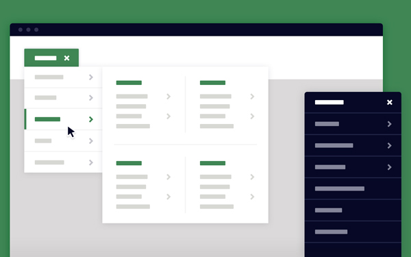
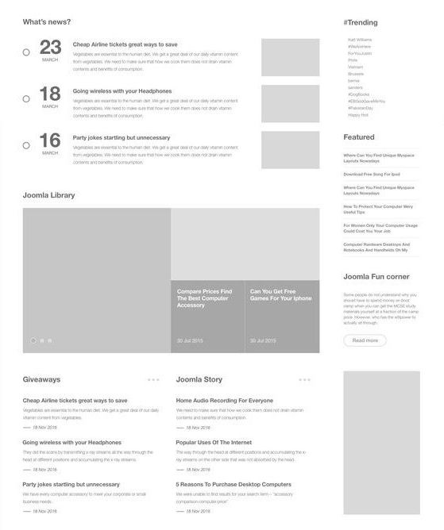
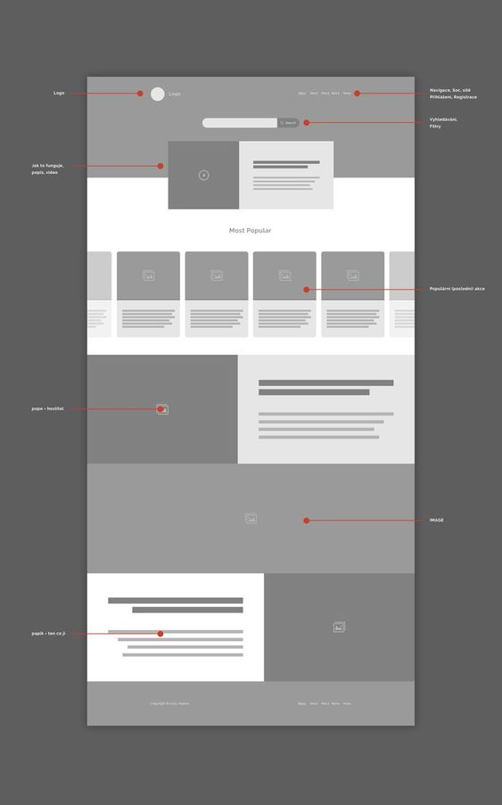
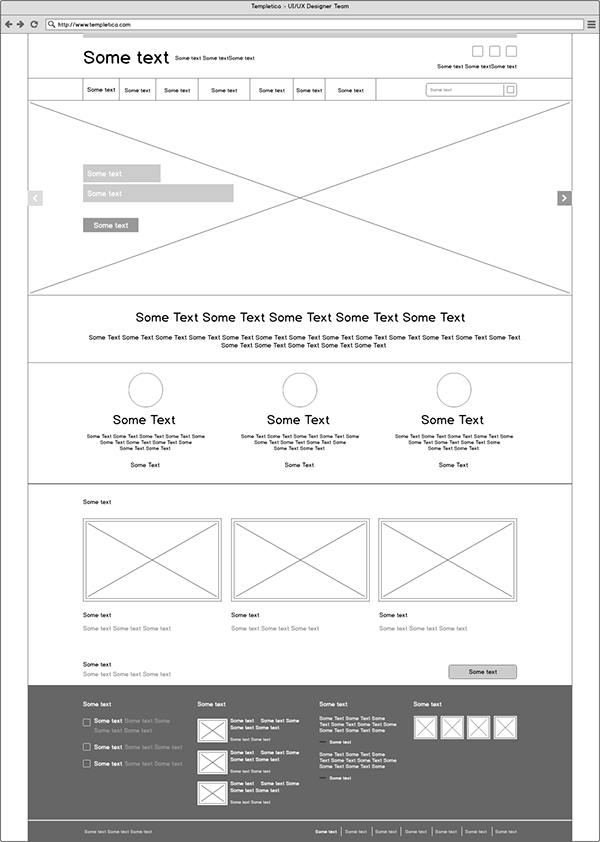

Wireframing Patterns
As you browse website wireframes on Behance or Dribbble looking for inspiration, you may come across some common patterns that they all share. Here are some of them:
-
Navigation
All websites use some kind of navigation to help users get around the site and find what they need. Typically, this navigation is either at the top of the page or on one side. Wireframes usually contain the navigation links either as text, or in the form of small boxes representing buttons. It is good practice to minimize the number of clicks it takes for a user to reach their desired destination on the website. David Zheng, a contributor to The Daily Egg, says, “If you haven’t generated interest in 15 seconds, then you probably aren’t going to” (Zheng, 2020)³. Therefore, navigation can make or break a user experience. Having navigation menus or side bars in the wireframe shows the client how quickly and easily the users can find what they are looking for - which influences how smooth the user experience will be.
Image from Codyhouse.com
-
Hierarchy
Hierarchy is extremely important in a wireframe, because it defines what elements the user will see first. Mike Angeles, writer for the Balsamiq Wireframing Academy website, states, “Hierarchy helps users make sense of complex systems…On large online stores like Amazon, for instance, hierarchy is used in navigation to help users drill down to content from broad to smaller categories” (Angeles, n.d.)⁴. Good hierarchy will use the Gestalt principles of Order, Continuity, and Focal Points. To show hierarchy, basic low-fidelity wireframes simply use bolder, thicker lines to represent main headings, and narrower lines to represent paragraph content. For mid-fidelity and high-fidelity wireframes, hierarchy is shown by using varying font sizes and weights. Usually, elements are placed in the order of descending hierarchy. For example, in this wireframe by Són Min, the headings are bold and have a larger font size as compared to the paragraph text. Our eyes move from top to bottom according to the visual order of the page elements.
Designed by Són Min. Image from Dribbble.com.
-
Call to Action
A call to action is a statement or button or other element that draws the user’s attention toward the main purpose of the site. For example, the website for an animal rescue organization might have a statement in the center of the landing page that tells the user about their impact on animals. Some other organizations might want their users to donate, so you might see a “Donate” button as soon as you open the page. Generally, these calls to action stand out either through color, font size, or placement on the page. To depict these, wireframes may show buttons that are in a different color than the rest of the elements, or a line of text that is larger than the others. If the wireframe is using grayscale, the call to action might be a shade darker than the rest. Whatever the approach, the purpose is to convey a sense of urgency for the action that the user is expected to perform. In the example below by Adam Kalin, we see two call-to-action buttons - “Learn More” and “Join”.

Designed by Adam Kalin for Intent. Image from Dribbble.com.
-
Spatial Organization
Wireframes generally use rules such as the Gestalt principles of Alignment, Grouping, and Similarity to guide the user visually. Typically, each element on the page is aligned to at least one other element. Grouping the whole page into sections helps reduce the overall cognitive load on the user. Leaving enough white space around elements helps the design look clean. Similar elements can be placed within one section. The overall page has a theme that ties all the sections together. For example, in the wireframe below, each section is colored a different shade of grey to help differentiate them. Similar image cards are placed into the same section.
Designed by UXPatterns on Pinterest. Image from Pinterest.com.
-
Wireframes are usually static .jpeg or .png files. Some can be animated depending on the designer’s preference, but most of the portfolio examples you will see are static. This is because static images are easier and faster to create and distribute. From the clients’ side, static images take less time to interpret and can be reviewed at the client’s own pace. It is also less of a hassle to make comments on a static file.
Designed by Sanjay Patel. Image from Behance.net.